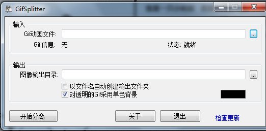
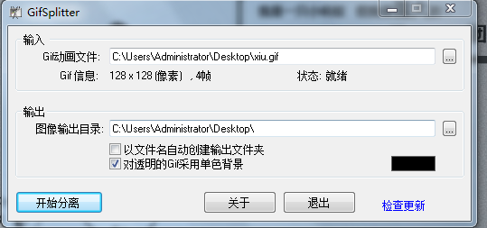
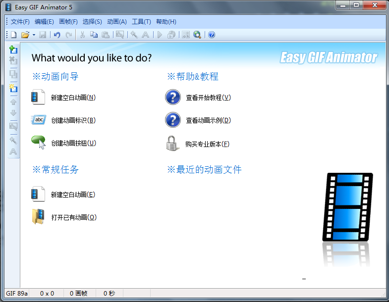
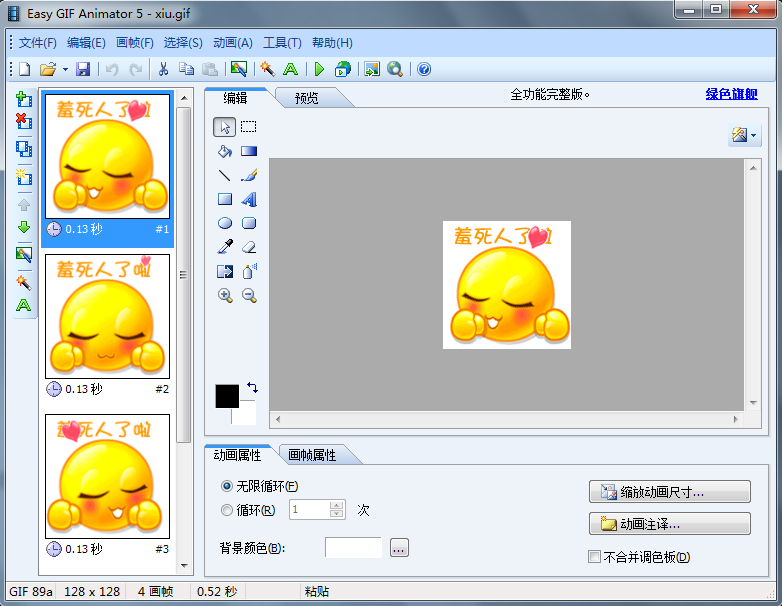

Android播放Gif动画
在Android 中是不支持直接使用Gif 图片关联播放帧动画，如下动画在Android 中是无法播放的：
Android提供了另外一种解决的办法，就是使用AnimationDrawable这一函数使其支持逐帧播放，但是如何把gif图片打散开来，成为每一帧的图片呢？下面介绍两种比较不错的软件，可以帮我们打散图片。
gifsplitter2.0
使用方法如下：


这一软件分割图片都是bmp图片，图片比较大，这里不推荐使用，尽量节省不必要的字节，所以这里推荐使用如下软件
easygifanimator
软件下载：动画分割器
使用方法如下：


点击文件将帧文件导出即可
得到了帧文件后我们可以就编写代码，在res目录下新建anim动画文件夹，写下如下代码
<?xml version="1.0" encoding="UTF-8"?><animation-list xmlns:android="http://schemas.android.com/apk/res/android
android:oneshot="false" >
<item
android:drawable="@drawable/xiu0
android:duration="150"/>
<item
android:drawable="@drawable/xiu1
android:duration="150"/>
<item
android:drawable="@drawable/xiu2
android:duration="150"/>
<item
android:drawable="@drawable/xiu3
android:duration="150"/>
</animation-list>
对应的item 为顺序的图片从开始到结束，duration为每张逐帧播放间隔，oneshot 为false 代表循环播放，设置为true 即播放一次即停止。
对应Activity 代码如下编写：
import android.app.Activity;import android.graphics.drawable.AnimationDrawable;
import android.os.Bundle;
import android.view.View;
import android.view.View.OnClickListener;
import android.widget.ImageView;
public class animActivity extends Activity implements OnClickListener {
ImageView iv = null;
@Override
public void onCreate(Bundle savedInstanceState) {
super.onCreate(savedInstanceState);
setContentView(R.layout.main);
iv = (ImageView) findViewById(R.id.ImageView01);
iv.setOnClickListener(this);
}
@Override
public void onClick(View v) {
AnimationDrawable anim = null;
Object ob = iv.getBackground();
anim = (AnimationDrawable) ob;
anim.stop();
anim.start();
}
}
使用AnimationDrawable 对象获得图片的图片，然后指定这个AnimationDrawable 开始播放动画
Tip：使用此方法不会默认播放，必须要有事件触发才可播放动画，如上面的通过点击监听触发动画的播放
那么如何使用图片自动播放呢？我们可以联想一下，ProgressBar 是不是默认的时候就会转，那就是那个圆形的进度条，是的。我们可以对它进行改造合它也可以自动播放，在Values 文件下新建一个styles 文件，编写如下代码 ：
<?xml version="1.0" encoding="UTF-8"?><resources>
<style
name="animStyle
parent="@android:style/Widget.ProgressBar.Large" >
<item name="android:indeterminateDrawable">
@anim/test
</item>
</style>
</resources>
上面样式文件自Widget.ProgressBar.Large 为其设置动画文件，我们在XML中就可以通过设置它的样式使其为我们工作
<ProgressBarid="@+id/ProgressBar01
style="@style/animStyle
layout_width="128px
layout_height="128px
android=""
android=""
android="" >
</ProgressBar>
OK，就是这么简单，下面看看运行效果：